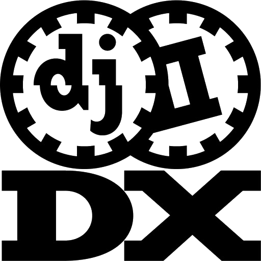
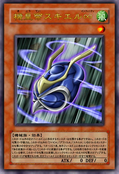
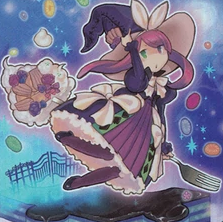

trivia
The name "Tina"
The name "Tina" actually comes from "Tina Sprout" from the
light novel "Black Bullet". I owned an account named
tina_sprout on some French forums years ago and got
used to people calling me Tina.
Since then, I decided to create my own original character
called "Tina Sunglow". You can see her right above. Art
was commissioned to Reiji.
tech
Linux
I love Linux. It's so satisfying and convenient to use, I
don't think I will ever be able to switch to Windows as my
main OS ever.
I use Fedora with a
minimal install on which I added i3.
My configuration, alongside a bunch of softwares
recommendations and tips can be found on my Dotfiles repository.
games
beatmania IIDX

If you ask me, IIDX is the best rhythm game, if not the
best video game.
Its simple yet efficient long-proven gameplay makes it a
reference in the whole genre.
I started investing myself in the game during fall 2015.
I'm currently 8th dan in Single Play (7 keys) and 2nd dan in
Double Play (14 keys).
tech
Vim
Vim is the best editor there is, period. It's fun to use,
it's powerful, it's blazing fast. There are no downsides to
using Vim.
trivia
The name "skielred"

When I started playing arcade games, I wanted a new name. It
had to be able to be shortened to something that sounds
nice. skielred can actually be shortened to "SKL" when I can
input only 3 letters (ie. Tetris), or SKIEL when I can use a
bit more letters (ie. DJ SKIEL in IIDX).
The name "skiel" actually comes from a Yu-Gi-Oh! 5D's
archetype, there is a card named "Meklord Emperor Skiel ∞".
When making rhythm games custom charts, I use "DJ SKIEL" as
a nickname, the "DJ" part is a reference to beatmania IIDX.
For special occasions, I sometimes used
"UTOPIA MONARCH SKIEL" as a name when making charts, it
references other Yu-Gi-Oh! cards.
games
Rhythm games
I play rhythm games a lot, mostly arcade ones. Rhythm games
are satisfying. They are kind of like a sport. The more you
play them, the more you improve. And you aren't really
rewarded for long and intensive play sessions. To improve at
rhythm games, the best way is usually to play regularly,
even if you don't play that much. It really feels like a
sport.
I have controllers at home to emulate the arcade feeling of
various rhythm games such as beatmania IIDX, SOUND VOLTEX,
Taiko no Tatsujin, pop'n music, Dance Dance Revolution,
Groove Coaster, REFLEC BEAT, jubeat, BeatStream,
CROSS×BEATS, I may be forgetting some lol. I play IIDX and
voltex actively.
IRL
Compote

Compote is my girlfriend. She is a student in web design
and watches anime. She also plays Azur Lane way too much.
She is somehow good at Shadowverse.
She has a Twitter at @Eymiimi.
You may or may not want to reach her
on Discord at Compote#3727.
She isn't actually called Compote.
trivia
The name "Shookaite"
Somewhen, in 2014, I think, together with some friends we
created new nicknames to name our video game characters.
They were all based on some dumb French wordplays. Shookaite
is actually read the same way as "chouquette", a French
pastry.
hobby
I listen to music
Not surprising I guess. I listen mostly to hardcore
electronic, I follow some Japanese music doujin circles.
I like the works from Massive New Krew, USAO, RoughSketch.
Actually I could name a lot of artists but the list would
keep growing so please talk to me if you want to know more!
hobby
Yu-Gi-Oh! card game

I play and collect Yu-Gi-Oh! cards. The game is fun. I went
to some local tournaments and even tried the regional World
Championship Qualifiers! I didn't do very well though lol.
Building decks is fun, also collecting can be quite pleasant
since some cards actually have very cool artworks.
hobby
Anime and animation
I watch a lot of anime. I mostly watches what's currently
airing. Every season I pick up from 6 to 12 shows, I usually
have 2 or 3 episodes to watch everyday. It's relaxing to watch
anime. I really enjoy admiring the art of animating things.
I have on account on MyAnimeList
where you can see which shows I have watched on which ones
I am currently watching. I don't update it after every
episode, I usually update it at the start of each new
season.